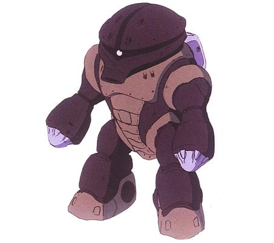

| MSM-04 Acquy Stealth Marine Combat Amphibious Zeon Duchy Mobile Suit |
|
|  | |
General and Technical Data |
|
|
Model number: MSM-04 Code name: Acguy Unit type: mass production stealth amphibious mobile suit Operator: Zeon Duchy Dimensions: head height 19.2 meters Weight: empty 91.6 metric tons; max gross 129.0 metric tons Construction: High Tensile Steel Powerplant: 2 x Minovsky type ultracompact fusion reactor, output rated at 951 kW each; 1902 kW total Propulsion: hydrojet thrusters, 109000 total Performance: thruster acceleration 0.85 G; maximum water speed 53 knots; maximum ground running speed 80 km/h Equipment and design features: sensors, range unknown; interchangable forearm weapon systems Fixed armaments: 4 x 105mm vulcan gun, fire-liked, mounted in head Optional fixed armaments: weapon arms, interchangeable with multiple features. |
|
| Technical and Historical Notes | |
|
The MSM-03 Gogg was a striking success for heavy amphibious assaults, where its tough armor and heavy weapons could lay down a strong force of arms. However, the Gogg's giant shape and high reactor output made it an extremely obvious target to seasoned Federal sensor operators. As such, it is extremely for operations where limited force or stealth is required. As the Gogg was a Zimmad entry, the Zeonic Corporation, of course, felt obligated to field their own design.
The MSM-04 Acguy is a radically different mobile suit design to the Gogg. The Acguy is made up mostly of recycled Zaku components, including a pair of reactors, making it much cheaper to produce than the Gogg. Furthermore, by sheilding each reactor from strengthening the other's m-particle output, Acguys can easily slip undetected through enemy territory. Their reduced target silhouette creates less resistance underwater, further making them nearly invisible to enemy sonar scans. The Acguy's head also equips a 360-degree mono-eye, which further eliminates noise while getting a better view of a target. The Acguy is armed with four 105mm vulcan guns mounted in its large and immobile head. Rather than mounting additional weapons in its torso like the Gogg, all of the Acguy's weapons are mounted in its arms, a trend that would be followed by later marine mobile suits. As the Acguy is intended for specialized missions, its arms are interchangable with different weapon systems. All in all the Acquy can arm torpedos, rockets, sharpened claws, beam cannons or conventional machineguns. However, to cut cost, most models are armed with the more standard 6 torpedo and MPC right arm, and sharpened claw left arm.
On top of that, the Acguy's Zaku reactors still equip their original coolant systems, giving it unlimited land sortie time. Though it isn't as heavily armored as the Gogg, its greater adaptability gives it a substantial battlefield advantage over the more portly Zimmad design. One lacking it does have, however, is a complete lack of jumpjet thrusters, requiring it to perform all land movement on its own power. In this the Gogg is technically superior, regardless of its larger target frame and other disadvantages.
|
 RPG quick stats sheet
RPG quick stats sheet | Weapons and Features | |
|
Unit #1 - Mounts 6 sharpened claws. Unit #2 - Mounts 6 sharpened claws and 1 mega particle gun. Unit #3 - Mounts 6 sharpened claws and 1 155mm machinecannon. Unit #4 - Mounts 6 torpedos and 1 mega particle gun. Unit #5 - Mounts 6 rockets and 1 mega particle gun. Unit #6 - Mounts 6 torpedos and 1 155mm machinecannon. Unit #7 - Mounts 6 rockets and 1 155mm machinecanon.
|
|